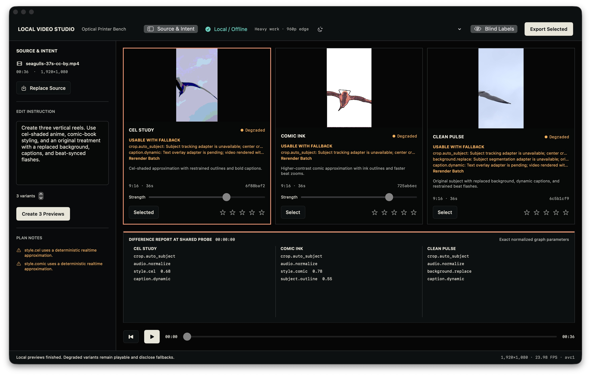
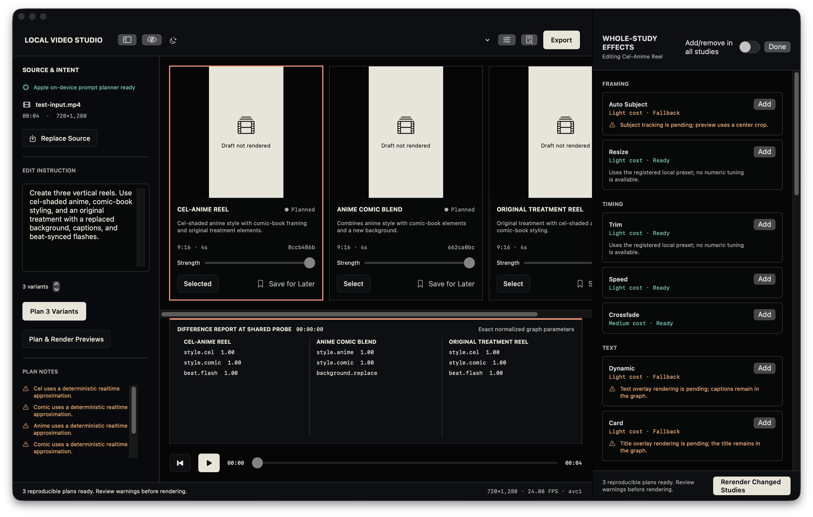

style.cel 0.68
Optical Printer Bench · local / offline
Compare the edit
before you commit.
Turn one clip and one editing intent into two to five reproducible studies. Inspect the exact graph difference, move every take with one playhead, and export only the one you choose.
Source 01
One local clip
1920×1080 · 23.98
style.comic 0.78
background.replace
Shared probe
00:02.18
The actual Mac application
One bench.
Equal studies.
Media stays larger than the controls. Every approximation and fallback is disclosed beside the affected result, and the difference report names the exact normalized graph parameters.

A bounded editing loop
Intent becomes an inspectable graph.
-
01 / Import
Bring one MP4 or MOV.
The source stays on your Mac. Project state is ordinary JSON; preview files use the system temporary directory.
-
02 / Plan
State the treatment.
Apple’s on-device model is preferred when available. A deterministic local planner remains the visible fallback.
-
03 / Compare
Move every take together.
Two to five variants share playback and probe time. Blind labels help you choose the image, not the name.
-
04 / Export
Commit one reproducible result.
Export unlocks only when the selected preview matches the current validated graph revision.

Strict by construction
AI proposes.
The graph decides.
The planner can only use a registered, versioned effect schema. Unknown fields and executable inputs fail closed. Unsupported effects are rejected or routed through a disclosed fallback without hiding the rest of a usable study.
- 23
- registered native effects
- 2–5
- comparable studies per plan
- 0
- accounts, telemetry, or cloud runtimes required
Release desk · 0.1.0 (1)
The app is built.
The download is not open.
The current local package is for verification only. Public distribution remains closed until Developer ID signing, Apple notarization, ticket stapling, Gatekeeper assessment, SHA-256 verification, and a support contact all pass.
- Hardware
- Apple silicon Mac
- 16 GB unified memory recommended.
- System
- macOS 14 or newer
- On-device prompt planning requires macOS 26 when available.
- Privacy
- Local and offline
- No account, cloud service, telemetry, or external runtime is required.
- Support
- Contact pending
- A direct support address will appear before signed distribution begins.